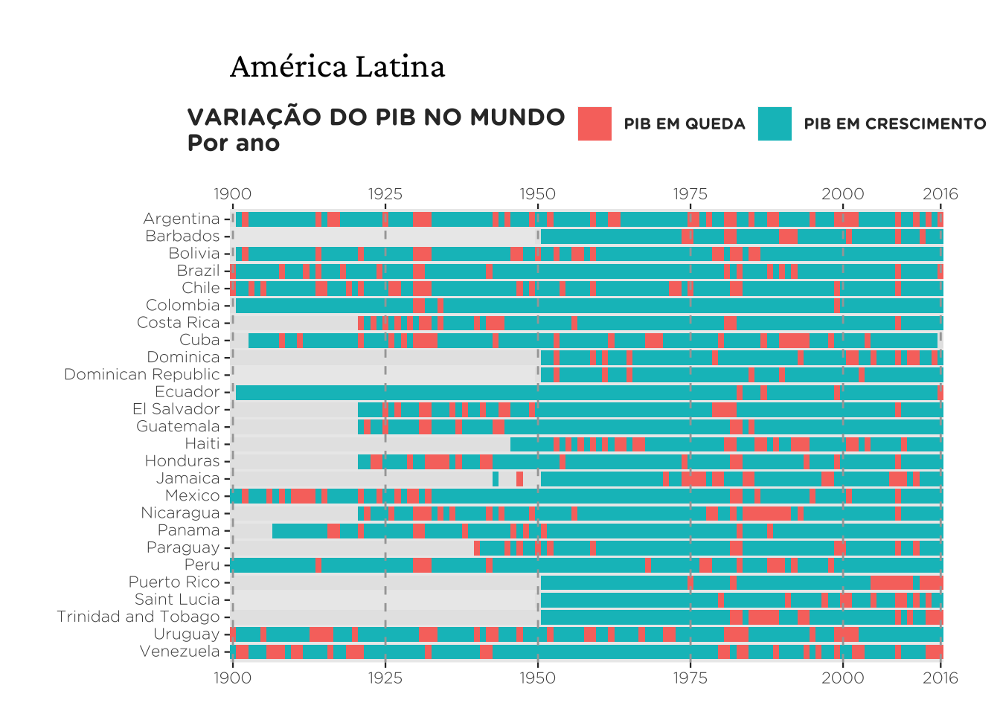

library(ggplot2)
library(stringr)
library(forcats)
library(dplyr)
library(tidyr)
library(showtext)
showtext_auto()Setup
Abaixo segue a lista com os principais pacotes que utilizo neste post. Eventualmente, outros pacotes como o ggtext ou sidrar são utilizados, mas deixo isto sinalizado.
Folha de SP
A visualização abaixo vem da Folha de São Paulo em matéria publicada em outubro de 2021. A matéria foi baseada num estudo que participei que tentava mensurar a acessibilidade financeira à moradia em São Paulo. Usando preços de anúncios online e microdados de renda, mensurei a maior (ou menor) acessibilidade via um indicador chamado HAI (housing affordability index). Neste

Neste exemplo vamos reproduzir apenas o gráfico de colunas. Para reproduzir o gráfico, copio os dados diretamente da imagem e tento chegar em tons de azul similares ao da imagem original. Não faço ideia qual a fonte que a Folha utiliza; usei a “Roboto” por ser relativamente similar e de fácil acesso.
Dados
Code
#> Dados do HAI
dados <- tibble::tribble(
~nome, ~hai, ~type,
"República", 80.1, 1L,
"Tatuapé", 70.4, 1L,
"Jabaquara", 68.3, 1L,
"Vila Mazzei", 66.4, 1L,
"Santana", 62.8, 1L,
"Jardim Brasil", 51.9, 0L,
"Belém", 48.5, 0L,
"Jardim Umarizal", 42.1, 0L,
"Parque Arariba", 42.1, 0L,
"Brasilândia", 42.1, 0L
)
dados <- dados |>
mutate(nome = factor(nome), nome = fct_reorder(nome, hai))
#> Cores dos grupos
cores <- c("#B9D4EE", "#348ACA")
#> Adiciona a fonte Roboto
font_add_google("Roboto", "Roboto")Replicando o gráfico
Básico
A primeira versão do gráfico contém apenas o essencial da imagem. Temos um gráfico de colunas, virado na horizontal, com labels de texto. Além disso, as cores estão variando por grupo e temos uma legenda de cores. Sem utilizar a função theme o resultado do gráfico fica próximo, mas ainda muito distante do original.
Code
ggplot(dados) +
geom_col(aes(x = nome, y = hai, fill = as.factor(type)), width = 0.5) +
geom_text(aes(x = nome, y = hai + 5, label = hai), color = "#000000") +
coord_flip() +
labs(x = NULL, y = NULL) +
scale_fill_manual(
name = "",
values = c("#B9D4EE", "#348ACA"),
labels = c(
"Para um casal com dois\nfilhos e renda mediana**",
"Para quem mora sozinho\ne tem renda mediana**")
)
Completo
O código abaixo tenta chegar num resultado próximo ao da imagem original. Essencialmente, precisamos:
- Ajustar a cor do fundo.
- Remover as linhas de grade.
- Remover todas as informações dos eixos.
- Ajustar a posição da legenda.
- Mudar a fonte e a cor do texto.
Além destas mudanças, também deixo os números em negrito e uso a vírgula como separador de decimal. O resultado final segue abaixo. Eu utilizo theme_minimal como um template inicial.
Code
ggplot(dados) +
geom_col(
aes(x = nome, y = hai, fill = as.factor(type)),
width = 0.5
) +
geom_text(
aes(x = nome, y = hai + 5, label = format(hai, decimal.mark = ",")),
size = 4,
vjust = 0.5,
family = "Roboto",
color = "#000000",
fontface = "bold") +
scale_y_continuous(expand = c(0, 0), limits = c(NA, 95)) +
coord_flip() +
labs(x = NULL, y = NULL, title = "") +
scale_fill_manual(
name = "",
values = c("#B9D4EE", "#348ACA"),
labels = c(
"Para um casal com dois\nfilhos e renda mediana**",
"Para quem mora sozinho\ne tem renda mediana**")
) +
theme_minimal() +
theme(
#> Fundo branco
panel.background = element_rect(fill = "white", color = "white"),
plot.background = element_rect(fill = "white", color = "white"),
#> Remove as linhas de grade
panel.grid = element_blank(),
#> Aplica a fonte Roboto
legend.text = element_text(family = "Roboto", color = "#000000"),
#> Ajusta o texto no eixo-y
axis.text.y = element_text(
family = "Roboto",
color = "#000000",
size = 12,
vjust = 0.4),
#> Remove o texto no eixo-x
axis.text.x = element_blank(),
#> Aumenta. margem superior para dar espaço para a legenda
plot.margin = margin(t = 40, r = 5, b = 5, l = 5),
#> Ajusta a posição e direção da legenda
legend.position = c(0.15, 1.1),
legend.direction = "horizontal"
)
Financial Times
O gráfico abaixo mostra a evolução trimestral do preço dos imóveis em alguns países da OCDE. Mais especificamente, os valores representam a variação real dos índices de preços imobiliários dos respectivos países; para comparar a evolução entre os países, os valores foram indexados no valor do primeiro trimestre de 2000. O gráfico foi publicado nesta matéria do Financial Times e foi publicado março de 2021.

Dados
Para reproduzir este gráfico, primeiro importo as séries via o pacote OECD. É preciso filtrar os países, limpar as datas e indexar os valores.
Code
library(OECD)
dataset <- "HOUSE_PRICES"
hp <- get_dataset(dataset)
countries <- c("CAN", "DEU", "USA", "ITA", "GBR", "FRA", "ESP")
dat <- hp |>
janitor::clean_names() |>
filter(ind == "RHP", cou %in% countries, stringr::str_length(time) > 4) |>
mutate(
date = zoo::as.Date(zoo::as.yearqtr(time, format = "%Y-Q%q")),
obs_value = as.numeric(obs_value)
) |>
filter(date >= as.Date("2000-01-01"), date <= as.Date("2022-10-01")) |>
select(country = cou, date, index = obs_value)
dat <- dat |>
mutate(reindex = index / first(index) * 100, .by = "country")
country_order <- dat |>
filter(date == max(date)) |>
arrange(desc(reindex)) |>
pull(country)
dat <- dat |>
mutate(country = factor(country, levels = country_order))Replicando o gráfico
Básico
Na sua essência, as duas linhas de código abaixo reproduzem o gráfico do Financial Times.
ggplot(dat, aes(x = date, y = reindex, color = country)) +
geom_line()
Para recriar o gráfico vou precisar das cores das linhas. Tentei encontrar cores parecidas, mas os códigos abaixo não devem ser idênticos aos do gráfico original. Além disso, também preciso do nome - por extenso - dos países.
#> Cores
cores <- c(
"#1A48B0", "#EB5F8E", "#73DAE4", "#A1BC4B", "#2F8CC9", "#7B052D", "#BBB7B4")
#> Nomes dos países
country_labels <- c(
"Canada", "UK", "France", "US", "Spain", "Germany", "Italy"
)As quebras no eixo-x são um pouco difíceis de emular, pois elas fogem do comportamento padrão do ggplot2. Assim, eu preciso definir ela manualmente e ainda fazer um pequeno “hack”: essencialmente, eu crio um vetor que destaca os anos “cheios” (2000, 2005, … 2020) e coloca valores vazios nos anos intermediários.
date_breaks <- seq(as.Date("2000-01-01"), as.Date("2022-01-01"), by = "year")
date_labels <- c(date_breaks[c(1, 6, 11, 16, 21)])
labels_year <- format(date_labels, "%Y")
labs <- c(sapply(labels_year, function(x) {c(x, rep("", 4))}))
labs <- labs[1:length(date_breaks)]
labs [1] "2000" "" "" "" "" "2005" "" "" "" ""
[11] "2010" "" "" "" "" "2015" "" "" "" ""
[21] "2020" "" "" Eu mantive a ordem das cores, mas como a ordem dos países mudou com a atualização dos dados, elas não batem com as dos países no gráfico original.
Code
ggplot(dat, aes(x = date, y = reindex, color = country)) +
geom_line(linewidth = 1) +
scale_color_manual(name = "", values = cores, labels = country_labels) +
scale_y_continuous(position = "right") +
scale_x_date(breaks = date_breaks, labels = labs) +
labs(
title = "The divergent paths of house prices across countries",
subtitle = "Real house prices (Q1 2000 = 100)",
caption = "Source: OECD (replica FT)",
x = NULL,
y = NULL) +
theme_minimal()
Completo
Para chegar num resultado mais próximo do original é necessário mexer em vários elementos temáticos. Como fonte, usei a Gill Sans.
Code
ggplot(dat, aes(x = date, y = reindex, color = country)) +
geom_line(linewidth = 1.1) +
scale_color_manual(name = "", values = cores, labels = country_labels) +
scale_y_continuous(position = "right") +
scale_x_date(breaks = date_breaks, labels = labs) +
labs(
title = "The divergent paths of house prices across countries",
subtitle = "Real house prices (Q1 2000 = 100)",
caption = "Source: OECD (replica)",
x = NULL,
y = NULL) +
guides(color = guide_legend(nrow = 1)) +
theme_minimal() +
theme(
#> Muda a cor do fundo do gráfico
plot.background = element_rect(fill = "#FEF1E4", color = NA),
#> Remove todos as linhas de grade intermediárias
panel.grid.minor = element_blank(),
#> Remove as linhas de grade "verticais" que partem do eixo-x
panel.grid.major.x = element_blank(),
#> Altera a cor das linhas de grade "horizontais" que partem do eixo-y
panel.grid.major.y = element_line(color = "#EAE3DF"),
#> Altera a fonte e a cor de todos os elementos textuais
text = element_text(family = "Gill Sans", color = "#686261"),
#> Ajusta o título do gráfico para ser maior e em preto
plot.title = element_text(size = 20, color = "#000000"),
#> Ajusta o tamanho da legenda
plot.subtitle = element_text(size = 12),
#> Ajusta a posição da "Fonte"
plot.caption = element_text(hjust = 0),
#> Altera o tamanho e a cor do texto nos eixos
axis.text = element_text(size = 11, color = "#6B6865"),
#> Aumenta as margens do gráfico
plot.margin = margin(rep(10, 4)),
#> Muda a cor do "tiquezinho" no eixo-x e deixa ele mais comprido
axis.ticks.x = element_line(color = "#EADFD8"),
axis.ticks.length = unit(7, "pt"),
#> Altera a posição da legenda
legend.position = c(0.35, 1)
)
G1
Gráfico Original
A imagem é um gráfico de colunas que mostra a taxa de desemprego média mensal no Brasil. A rigor, cada mês é um trimestre móvel. Os dados são da PNAD/C do IBGE. Há dois desafios nesta visualização: primeiro, o eixo-x, que apresenta o trimestre móvel junto com o ano (abreviado) e está virado em 90 graus; segundo, o valor em percentual que aparece no topo da coluna.

Dados
Importo os dados diretamente da API do SIDRA, o sistema de consultas do IBGE, via o pacote sidrar. Para mais informações sobre este pacote consulte o meu post sobre.
library(sidrar)
unemp <- sidrar::get_sidra(
6381,
variable = 4099,
period = "202206-202306"
)
#> Limpeza de dados
tbl_unemp <- unemp |>
# simplifica nome das colunas
janitor::clean_names() |>
# seleciona e renomeia colunas
select(
qtr = trimestre_movel_codigo,
date_label = trimestre_movel,
unemp = valor
) |>
# faz alguns ajustes estéticos nos dados
mutate(
date_label = str_remove(date_label, " 202[0-9]"),
date_label = str_trim(date_label),
date = as.Date(paste0(qtr, "01"), format = "%Y%m%d"),
year = lubridate::year(date),
date_label = str_glue("{date_label}/{substr(year, 3, 4)}"),
pct_label = paste(format(round(unemp, 1), decimal.mark = ","), "%")
)Replicando o gráfico
Básico
O código abaixo reproduz os elementos mais marcantes do gráfico acima. Note que eu crio um grupo artificial (fill = a) para forçar o gráfico a ter uma legenda de cores.
ggplot(tbl_unemp, aes(x = date_label, y = unemp, fill = "a")) +
geom_col(alpha = 0.9, width = 0.8) +
geom_hline(yintercept = 0) +
geom_text(
aes(label = pct_label),
size = 3,
position = position_stack(0.95),
hjust = 0.5,
color = "white"
) +
scale_y_continuous(breaks = 0:9, labels = \(x) paste0(x, "%")) +
scale_fill_manual(
name = "",
values = "#c6160d",
labels = "Índice no trimestre"
) +
theme_minimal() +
theme(
legend.position = "top",
legend.key = element_rect(color = NA),
axis.text.x = element_text(
angle = 90,
color = "gray50",
size = 10,
hjust = 1,
vjust = 1.5
)
)
Completo
Para melhor reproduzir o gráfico, uso o pacote ggtext que me permite maior flexibilidade no título. Além disso utilizo um pequeno hack (key_glyph='point') para fazer com que a legenda de cores seja no formato de um círculo ao invés de um quadrado.
Code
library(ggtext)
ggplot(tbl_unemp, aes(x = date_label, y = unemp, fill = "a", color = "a")) +
geom_col(alpha = 0.9, width = 0.8, key_glyph='point') +
geom_hline(yintercept = 0) +
geom_text(
aes(label = pct_label),
size = 3,
position = position_stack(0.95),
hjust = 0.5,
color = "white"
) +
scale_y_continuous(breaks = 0:9, labels = \(x) paste0(x, "%")) +
scale_fill_manual(
name = "",
values = "#c6160d",
labels = "Índice no trimestre"
) +
scale_color_manual(
name = "",
values = "#c6160d",
labels = "Índice no trimestre"
) +
guides(color = guide_legend(override.aes = list(size = 5))) +
labs(
title = "<strong><span style='font-size:18px'>Evolução da taxa de desemprego no Brasil</span></strong><br>
<span style='font-size:16px'>Índice no trimestre</span>",
caption = "Fonte: IBGE",
x = NULL,
y = NULL) +
theme_minimal() +
theme(
legend.position = c(0.05, 1.1),
legend.key = element_rect(color = NA),
plot.background = element_rect(fill = "#ffffff", color = NA),
panel.background = element_rect(fill = "#ffffff", color = NA),
panel.grid.minor = element_blank(),
panel.grid.major.x = element_line(linetype = 2),
axis.text.x = element_text(angle = 90, color = "gray50", size = 10, hjust = 1.85, vjust = 1.5),
axis.ticks = element_blank(),
plot.title = element_textbox(margin = margin(t = 0, r = 0, b = 30, l = 0), hjust = 0)
)
Nexo
Gráfico
O gráfico mostra o ciclo de recessões e expansões nos países da América Latina, desde 1900. Os dados são do projeto Maddison e a fonte para a matéria está aqui. Num post anterior mostrei como reproduzir este gráfico e os outros da matéria.

Dados
Existe um pacote com os dados do projeto Maddison, chamado maddisson, mas os dados estão um pouco defasados. Para o propósito de replicar o gráfico acima isto não é um problema, já que a série se encerra em 2016. Para atualizar o gráfico, contudo, é preciso baixar os dados manualmente do site. Felizmente, isto é bastante simples no R. O código abaixo mostra as duas opções.
# Usando o pacote
library(maddison)
mad <- maddison::maddison
# Para trabalhar com dados mais atualizados
library(readxl)
# url com a tabela em Excel
url <- "https://www.rug.nl/ggdc/historicaldevelopment/maddison/data/mpd2020.xlsx"
#> Cria um path temporario e tenta baixar os dados
temp_path <- tempfile("maddison.xlsx")
try(download.file(url = url, destfile = temp_path, mode = "wb", quiet = TRUE))
if (file.exists(temp_path)) {
mad <- readxl::read_excel(temp_path, sheet = 3)
}O código abaixo faz a manipulação de dados necessária. Seleciona-se os países manualmente e cria-se uma variável binária que indica se o país encontra-se em expansão ou recessão em cada ano.
latam_countries <- c(
"ARG", "BOL", "BRA", "CHL", "COL", "CUB", "DOM", "ECU", "GTM", "HND", "HTI",
"MEX", "PER", "VEN")
latam <- mad |>
# Filtra apenas as linhas dos países selecionados
filter(
countrycode %in% latam_countries,
year >= 1900
) |>
# Agrupa por país
group_by(country) |>
mutate(
# Calcula a variação do PIB per capita de cada país
d_gdppc = gdppc / lag(gdppc) - 1,
# Cria uma variável binária para indicar se houve crescimento
growth = factor(if_else(d_gdppc > 0, 1L, 0L)),
# Remove parêntesis e o texto dentro dele
country = str_remove(country, " \\(.+\\)"),
# Abrevia o nome da República Dominicana
country = str_replace(country, "Dominican Republic", "Dominican Rep."),
country = factor(country),
country = fct_rev(country)
) |>
ungroup()Replicando o gráfico
Básico
A visualização é, essencialmente, um gráfico de calor de clusters, isto é, são vários quadrados coloridos adjacentes. Para desenhar este gráfico utilizo o geom_tile. Note que também duplico o eixo-x e coloco linhas verticais tracejadas no gráfico. Para conhecer mais sobre este tipo de gráfico veja meu tutorial sobre mapas de calor.
ggplot(latam, aes(year, country)) +
geom_tile(aes(fill = growth), height = .85, width = 1) +
geom_vline(
xintercept = c(1900, 1925, 1950, 1975, 2000, 2016),
linetype = 2,
colour = "gray65"
) +
scale_x_continuous(
breaks = c(1900, 1925, 1950, 1975, 2000, 2016),
expand = c(0,0),
sec.axis = dup_axis()
)
Completo
O gráfico completo faz algumas modificações na legenda de cores e diversas alterações temáticas no gráfico. O portal Nexo utiliza a fonte Gotham Rounded em algumas variantes. Para usar esta fonte é preciso tê-la instalada. Para evitar problemas, o código abaixo verifica se as fontes necessárias estão instaladas; caso contrário, usa-se a fonte Montserrat, do Google Fonts.
# Verifica a fonte do texto
dbfonts <- font_files()
nexo_fonts <- c("Gotham Rounded Bold", "Gotham Rounded Light")
cond <- str_glue("({nexo_fonts[1]})|({nexo_fonts[2]})")
check_fonts <- all(str_detect(dbfonts$family, cond))
font <- ifelse(check_fonts, "Gotham Rounded Bold", "Montserrat")
font_axis <- ifelse(check_fonts, "Gotham Rounded Light", "Montserrat")
font_title <- "Crimson Text"
if (check_fonts) {
# Adiciona as fonts Gotham Rounded Bold e Light
font_add("Gotham Rounded Bold", "Gotham Rounded Bold.otf")
font_add("Gotham Rounded Light", "Gotham Rounded Light.otf")
} else {
# Adiciona Montserrat caso as fontes Gotham nao estejam disponiveis
font_add_google("Montserrat", "Montserrat")
}
font_add_google("Crimson Pro", "Crimson Text")
showtext_auto()Code
ggplot(latam, aes(year, country)) +
geom_tile(aes(fill = growth), height = .85, width = 1) +
geom_vline(
xintercept = c(1900, 1925, 1950, 1975, 2000, 2016),
linetype = 2,
colour = "gray65"
) +
scale_x_continuous(
breaks = c(1900, 1925, 1950, 1975, 2000, 2016),
expand = c(0,0),
sec.axis = dup_axis()
) +
scale_fill_discrete(
breaks = c(0,1),
name = "VARIAÇÃO DO PIB NO MUNDO\nPor ano",
labels = c("PIB EM QUEDA", "PIB EM CRESCIMENTO"),
na.value = "gray90"
) +
labs(title = "América Latina", x = NULL, y = NULL) +
theme(
# Fundo do gráfico
panel.grid = element_blank(),
# Define as margens do gráfico
plot.margin = unit(c(1, 1, .5, 1), "cm"),
# Eixos
axis.text.y = element_text(vjust = .4),
axis.ticks = element_line(size = .4),
axis.text = element_text(family = font_axis, size = 8),
# Legenda
legend.position = "top",
legend.text = element_text(
size = 8,
colour = "gray20",
family = font
),
legend.title = element_text(
size = 12,
colour = "gray20",
family = font
),
# Título
plot.title = element_text(family = font_title, size = 18)
)